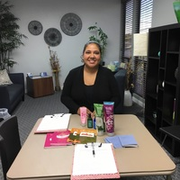

FREE Forever Footprints Coping With Loss: Helping Families with the Loss of a Child Through Miscarriage, Stillbirth and Early Infancy Group.
Helping families cope with the loss of a child through miscarriage, stillbirth, and early infancy.
A Free Grief Support Group
FREE Forever Footprints Coping With Loss: Helping Families with the Loss of a Child Through Miscarriage, Stillbirth and Early Infancy Group.
Helping families cope with the loss of a child through miscarriage, stillbirth, and early infancy.
Who: For bereaved parents and families who have experienced the loss of a child and need a place to help process their experience and be able to heal.
How: Sharing experiences with people who have suffered similar loss and pain that comes with losing a child. A safe forum to provide emotional and moral support for one another on a journey that can sometimes feel isolating. Discovering a place where healing begins in a therapeutic and soothing setting.
Topics addressed but not limited too: Grief process, Coping with triggers, PTSD with pregnancies after loss, coping with anniversaries and holidays, and any other topics group members want to address.
When: 3rd Sunday of every month 11:00am to 12:30am
Where: 3711 Long Beach blvd., Suite #5039, Long Beach, Ca 90807
When: 2nd Saturday of every month 6:00pm to 7:30pm
Where: 135 S. Lemon Street, Suite B, Orange, Ca 92866
Call to Reserve your spot today! Space is limited!
This support group is dear to my heart because I too needed a group like this when I lost my twin sons. This personal experience has provided me the knowledge of truly knowing the pain and the struggle that a loss like this can bring.
Get signed up today!!! Space is limited!
To get signed up for the group, contact me directly (213)324-6063 or please vitis Forever Footprints.
